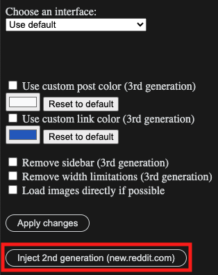
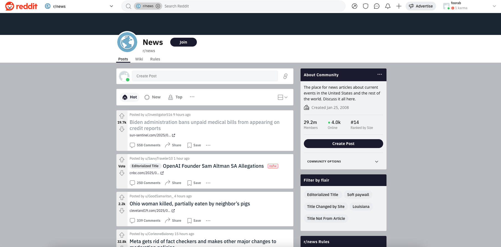

Thank you for installing UI Changer for Reddit! Click on the extension icon to bring up the popup menu and get started.
Update (09.02.2024)
- 2nd generation - fixed a bug where the 2nd generation interface would not appear for users who had selected a display language other than English; the feature is now a part of the drop-down menu (under "Choose an interface") and most links that are refreshed or opened in a new tab will work as expected (credit to Skidadlius on Reddit for improving on the initial feature);
- "Remove sidebar" - since the last update, Reddit has rolled out an updated look for a portion of the users, allowing them to finally collapse the sidebar; I am keeping this feature until the collapsible sidebar exists for all users;
- "Remove width limitations" - temporarily removed since Reddit changed their page layout again, breaking it;
- Custom color selection for post cards and hyperlinks - the feature was broken by a change in the page layout shortly after the update, will work again now
Bugs:
There are a few places on the 2nd generation interface which behave unexpectedly if they are refreshed or opened in a new tab. Here are the ones that I have discovered so far, along with ways to get around them:
- https://www.reddit.com/r/subreddit/about/moderators/ - go to the subreddit's homepage by removing "/about/moderators" from the end of the link and click on "VIEW ALL MODERATORS" instead;
- https://www.reddit.com/user/username - if you see a blank feed, click on "POSTS" or "COMMENTS" in the header to update it, after which you can continue browsing without problems;
- https://www.reddit.com/user/username/new/ (as well as /top and /hot) - go to the user's profile page by removing the sort method from end of the link, clicking on the sort methods on top of the feed will work (if the feed does not display, see the previous bullet point);
- Wiki pages (unless accessed directly from the header of the subreddit's homepage) - no known fix, temporarily change your preferred interface back to "Use default" to browse the wiki
If you find any other links which do not work as expected, please contact me. I am planning to release an update by same time next month at the latest to address these issues.
Update (07.01.2024)
Happy new year! Since Reddit has made some changes recently, so will I. Here are the updates in order of importance:
- Option to use 2nd generation (new.reddit) by injecting a script - the previous generation interface will open in another window, allowing you to take advantage of all its functions;

- "Remove sidebar" - works better now, centering the visible content instead of leaving an uneven space between two sides of the window
- Custom color selection for post cards and hyperlinks - will override any community-specific colors on the 3rd generation interface, though switching between light mode and dark mode will impact the appearance
If you want to ask questions or share your feedback, email me (andre@andremeri.com) or leave a review on Chrome Web Store.